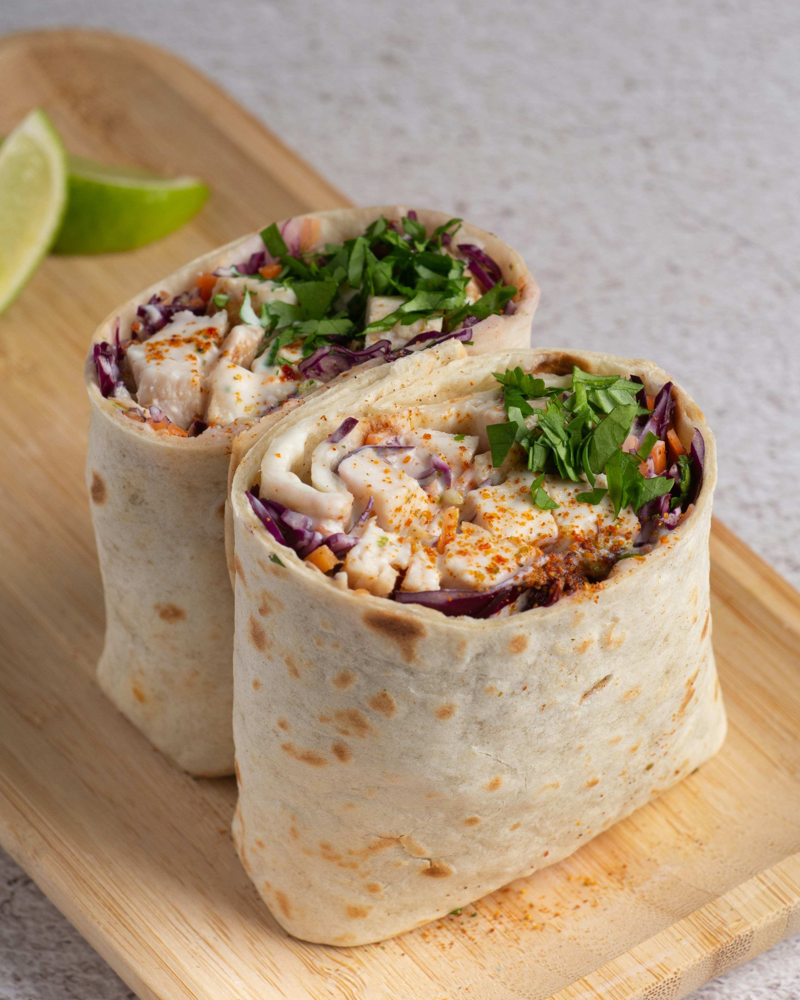

Home
Buffalo Chicken Wraps

A great dinner to go
In a hurry? This recipe will show you how to make a filling wrap for when you're hungry on the go
Ingredients
- 2 flour tortillas
- 1 chicken breast
- 1/2 tablespoon olive oil
- A pinch of paprika, cayenne pepper, black pepper, and garlic powder
- 1/2 avocado
- 1 slice of swiss cheese
- 6 pickle chips
- Buffalo sauce of your choice
- Heat oven to 425 degrees
- Add spices and olive oil to chicken breast
- Bake for 20 minutes
- Heat flour tortillas
- Add 3 slices of avocado, half of the swiss cheese slice, and 3 pickles to each tortilla
- Once chicken is done, cool for 2 minutes, and shred (easier with forks)
- Add shredded chicken to each tortilla, add buffalo sauce, and wrap it up
- Voila! You now have buffalo chicken wraps to enjoy anywhere. It can be eatten cold